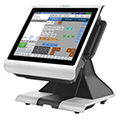

PAR®PixelPoint®POS
No importa si está operando un restaurante de servicio rápido, casual o restaurante de cena formal, PAR®PixelPoint® POS le ofrece características robustas en una solución fácil de implementar y fácil de usar.
PAR®PixelPoint®BackOffice®

Diseñado para directores de empresas, de campo y de sitio, Operaciones de Información proporciona visibilidad en todas las tiendas y es una herramienta de toma de decisiones indispensables. Acceso a un panel ejecutivo, se obtiene una visibilidad clara de finanzas, análisis de ventas, marketing, inventario, y la fuerza laboral.
EverServ®7700
El diseño renovado del EverServ®7700 familia del hardware de punto de venta, se construye con la misma durabilidad con la que PAR® es conocida; para su negocio es una decisión importante que afecta el nivel de servicio y rendimiento que ofrecen a sus clientes pero en un diseño innovador y elegante.
EverServ®7200

La EverServ®7200 está hecha para funcionar en ambientes ásperos que involucran trato rudo y derrame de líquidos. El contemporáneo y elegante diseño de la 7200 la convierte en la mejor opción para operadores conscientes de la importancia de la imagen. La arquitectura de siguiente generación de alto rendimiento de la 7200, soporta aplicaciones demandantes y ofrece la velocidad que usted necesita para mejorar la atención a sus clientes.
EverServ®500

El diseño ofrece una resistente carcasa de alto impacto que se construye para soportar duras condiciones en restaurantes y locales comerciales con un funcionamiento continuo. El diseño de la EverServ®500 sin ventilador es silencioso, ofrece un bajo consumo de energía y minimiza el mantenimiento.
PAR®Tablet 8"

Ya sea que usted esté buscando ampliar su solución de punto de venta, mejorar la experiencia del cliente o mejorar la eficiencia de sus operaciones, la tablet 10 de PAR® es el ajuste ideal. La tablet es el equilibrio perfecto entre tamaño, fiabilidad y facilidad que se celebra en una mano.

Entrenamiento:
Confíe en el personal de Chili System, el cual está certificado para brindar capacitación e implementar los módulos del software POS para que usted pueda aprovechar al máximo las ventajas y beneficios de PAR®PixelPoint®POS.
Modelo de Administración:
Usted puede dejar la administración del Software PAR®PixelPoint®POS en manos expertas con el objetivo de no incurrir en gastos adicionales de personal e infraestructura, ya que Chili System provee integralmente este servicio.
Contratos:
Tenga la tranquilidad de tener la operación de su negocio cubierto a través de los beneficios que contienen nuestros diferentes contratos para que el funcionamiento de su negocio no pare de crecer.
Si usted es el dueño / operador de una sola unidad o un gerente responsable de miles de sitios, la comprensión del desempeño actual del restaurante es fundamental para el éxito del negocio en curso. EverServ Operaciones de informes es un PAR-organizada, Software-as-a-Service (SaaS) servicio de información de la empresa basada en la Web que consolida los datos de todos los restaurantes y puestos de TI a un portal Web seguro. Diseñado para directores de empresas, de campo y de sitio, Operaciones de Información proporciona visibilidad en todas las tiendas y es una herramienta de toma de decisiones indispensables. Acceso a un panel ejecutivo, se obtiene una visibilidad clara de finanzas, análisis de ventas, marketing, inventario, y la fuerza laboral.
• Mejora de la visibilidad de las operaciones - tablero ejecutivo de Operaciones de Información le permite ver una instantánea de todo el rendimiento de su empresa o profundizar en las regiones o las operaciones de tienda individual.
• Mejora de la toma de decisiones - Visibilidad de información procesable sobre las operaciones de los sitios remotos le permite reaccionar con rapidez y tomar mejores decisiones.
• Accesible en cualquier lugar - Alojado en un portal Web, los informes de sus operaciones 'se puede acceder en cualquier lugar que tiene un dispositivo con funciones de explorador Web.
• Fácil integración - Se integra fácilmente con otras aplicaciones empresariales (finanzas, nóminas y la cadena de suministro) y productos de Microsoft, como Excel.
• Tiene capacidad para el crecimiento futuro - Construido sobre una arquitectura orientada a servicios de Información de Operaciones tiene la flexibilidad y escalabilidad para crecer con sus operaciones.
Dashboard Ejecutivo - Proporciona una visión general de las métricas de negocio:
• Representación gráfica de datos.
• Drill Down Capability.
• Opciones tailorable
- Categorías de resumen definidos por el usuario
- Alertas codificadas por color con base en los límites definidos por el usuario
- Diseño configurable
Informes Operacionales - Información sobre el emplazamiento y el funcionamiento de la empresa:
• Las vistas de datos
- Rejilla estándar
- Rejilla Drill-down
- Dashboard con cuatro tablas y 24 indicadores clave de rendimiento
- Exportar a Excel
• On-the-Fly Modificaciones
- Selecciones de rango de fecha
- Agrupación personalizada
- Ordenamiento de las columnas, el posicionamiento y la clandestinidad
- Resaltado de datos y mapeo de calor
• Las exportaciones para el Intercambio de Información
- Sobresalir
- Email
Arquitectura Avanzada - Garantizando la fiabilidad de la aplicación:
• Arquitectura orientada a servicios
• Diseño de varios niveles
• Base de datos de SQL Server
• Sistema de transporte de archivos
- También disponible para el sitio para la transferencia de archivos corporativos
PAR Hosting - Elimina la aplicación y el esfuerzo de apoyo a los centros de datos del estado de la técnica:
• Redundancias incorporadas
• La seguridad física
• Supervisión por terceros automatizado
• Suscripción Precios
Informe general Set - Ofrece visión de las operaciones:
• Informes financieros
• Informes de Análisis / Rendimiento
• Informes de Marketing
• Informes de Inventario
• Informes de la Administración de TI / Apoyo
• Informes personalizados
Sistema de acceso seguro - Protege la información de negocios:
• Company, la función y la seguridad individual
• Acceso Reportar / datos basado en el código de trabajo